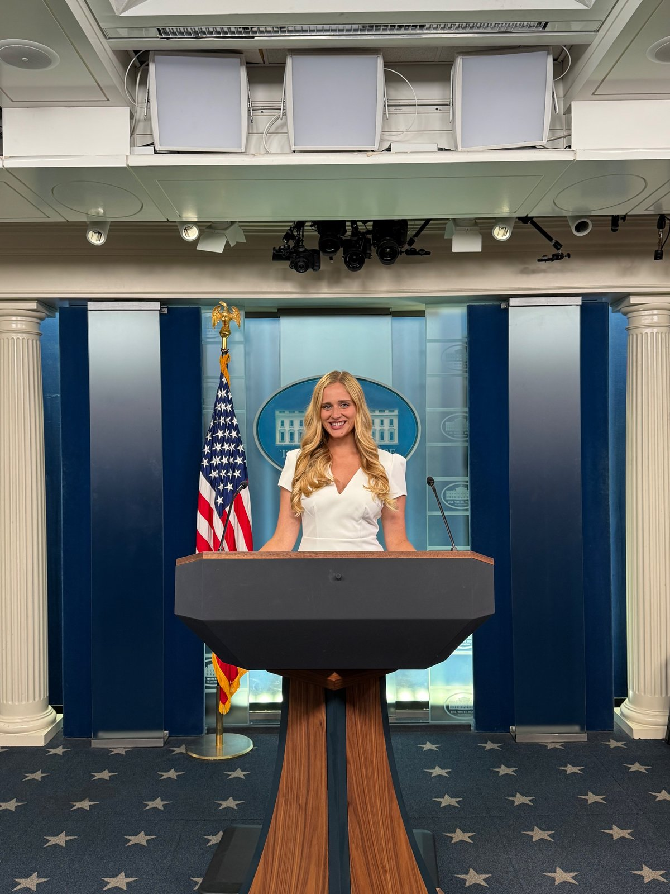
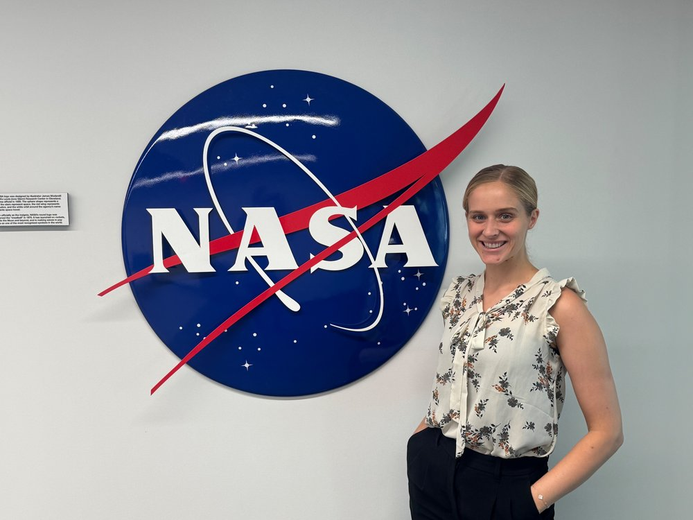
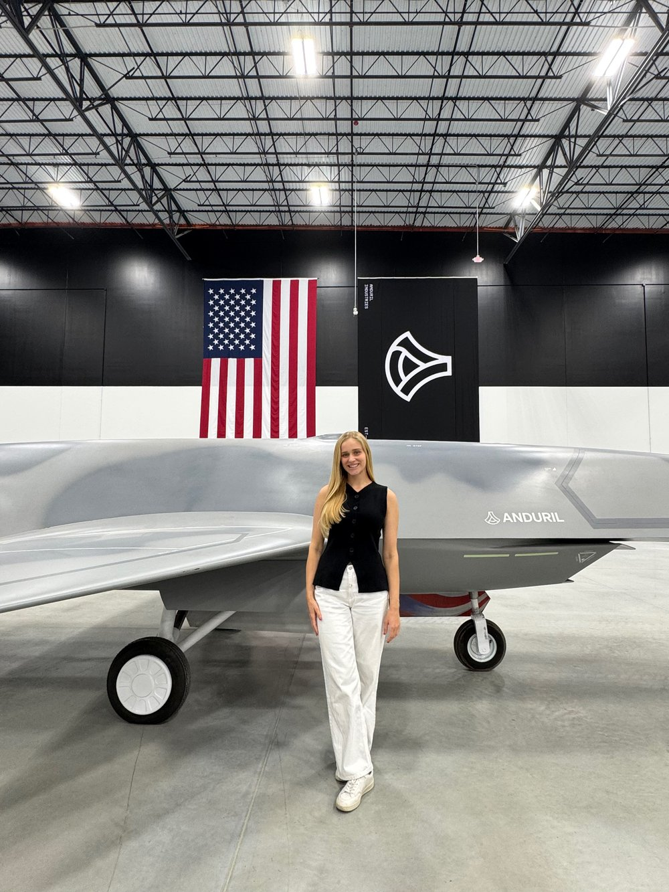
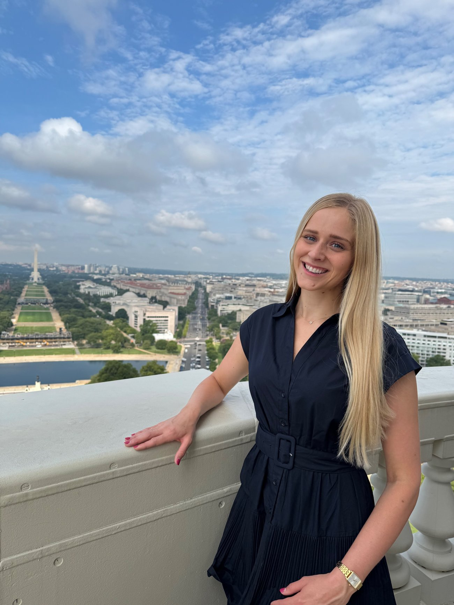
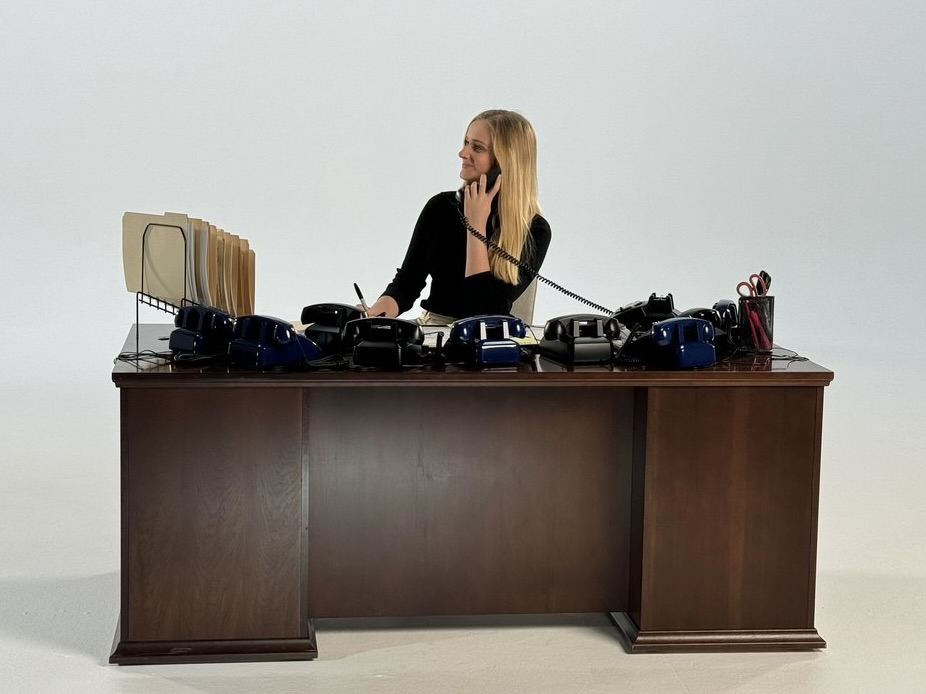

Washington, D.C. · Communications Director, U.S. House of Representatives
Communications Director for a Member of Congress, a national security fellow on the side, and raised in Oregon.
Rebecca is Communications Director for Congressman Dave Taylor (OH-02) — the office's formal spokesperson and media liaison, responsible for message strategy, rapid response, and the constituent-facing work that turns legislation into something people actually understand. Before that, she cut her teeth on nearly every side of a Hill comms shop: digital strategy, speechwriting, press logistics, and leadership-office scheduling.
She grew up in Oregon before heading east, and she's carried a Pacific Northwest directness into a city that often rewards the opposite. She's the person who remembers your name, your dog's name, and the thing you mentioned in passing three conversations ago.

Institute for American Leadership. One of 30 fellows selected for a 10-month program on the role of soft power in U.S. foreign policy — seminars and working sessions with senior defense officials and diplomats, and a capstone project analyzing foreign assistance as a tool in great power competition.
Formal spokesperson and media liaison for the Congressman. Builds media, rapid-response, and public relations strategy; tracks legislative and national issues that may put him in the spotlight; oversees newsletters and constituent-engagement campaigns.
Worked alongside senior foreign policy and national security practitioners on key global issues; built a sample appropriations budget in a reconciliation simulation, collaborating across the aisle on bipartisan policy solutions.
Owned digital content across X, Facebook, Instagram, and YouTube — graphics, video, and data-driven strategy that grew the Congressman's reach. Wrote video scripts, talking points, and town hall materials.
Drafted speeches, radio talkers, newsletters, and targeted email/SMS campaigns. Wrote 50+ constituent commendation letters and briefed 200+ constituent tours on the Congresswoman's legislative work.
Logged press correspondence to help set up 500+ interviews and TV hits; maintained White House and congressional correspondent press lists; coordinated 50+ listening sessions for the Deputy Communications Director.


Rebecca is building toward a communications role at NASA — bringing the same instinct that makes a bill's fine print make sense to a constituent to bear on something bigger: making the case for what the agency is actually doing, and why it matters. Her national security fellowship work has only sharpened that pull toward the harder edge of technology and public mission — space included.
Policy and orbital mechanics have more in common than people think — both need a translator.
Years of press strategy under real scrutiny, applied to an agency the public wants to believe in.
Relationship-first, always reachable — the kind of communicator people loop in early.

Before the Rayburn Building, there was Oregon State — a B.A. in English and a B.S. in Psychology, earned cum laude in 2021. She was a 2023 Oregon Cherry Blossom Delegate and served as Induction Officer for Psi Chi, the international psychology honor society, alongside coursework in advertising, PR, and technical writing.
It's the part of the résumé that doesn't show up in a job title, but shows up in everything else: how she works a room, how she treats staff, how she still measures a good day against an Oregon standard.
"Still an Oregonian who happens to work three time zones away."

Rebecca is easiest to reach the old-fashioned way — say hello, and she'll remember it.